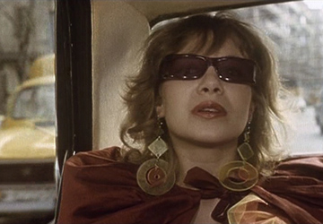
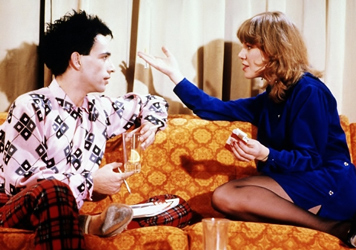
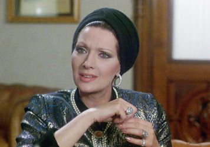
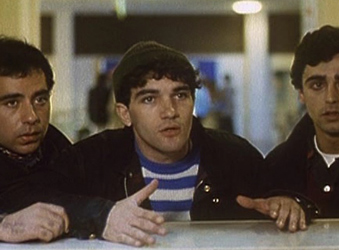
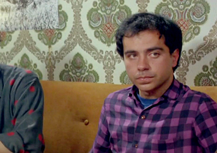
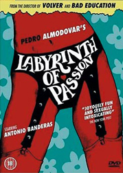
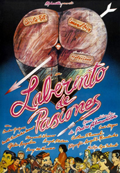
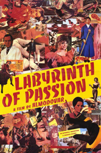

Cecilia Roth - Sexilia
Imanol Arias - Riza Niro
Cecilia Roth - Sexilia


Helga Liné - Toraya
Antonio Banderas - Sadec

Susana
Eusebio's girlfriend
Remedios
Santi
Ali
Patient
Ana
Mother of Angustias

Agustin Almodóvar - Hassan
Sexilia ("Sexi") is a pop star and sex addict; Riza is the gay son of the Emperor of Tiran (a fictional Middle Eastern country). Both are strolling around Madrid's flea market, aiming to pick up lovers. Sexilia takes two men for an orgy, where she is the only woman. In the hope of curing her nymphomania and her fear of the sun, she is undergoing psychotherapy. However, her psychoanalyst, Susana, is far more interested in sleeping with Sexila's father, Doctor de la Peña, a gynecologist specializing in artificial insemination. As the doctor is frigid, Susana does not have a chance with him. One of Doctor de la Peña's patients is Princess Toraya, the ex-wife of the former Emperor of Tiran. Flicking through a magazine, Toraya discovers that her stepson Riza Nero is also in town. Thanks to treatment by Sexilia's father, Toraya is now fertile for the first time in her life. Since the emperor's sperm is currently unavailable to her, she will settle for that of his son, Riza, whom she attempts to track down.
In Madrid, Riza is living incognito, constantly wearing a wig and dark glasses. He gets involved first with Fabio, a young junkie transvestite. Later he meets Sadec on the street and the two go to Sadec's place for a tryst. Ironically, Sadec is a member of a group of terrorists looking for Riza, but fails to recognize him in disguise. When Riza realizes that Sadec is also from Tiran, he decides to change his hair and clothes in order to protect his anonymity. With Fabio's help, Riza transforms his appearance to a punk. Sexilia and Riza, who knew each other when they were children, meet again, when Riza, disguised as "Johnny", is performing as the lead singer with a punk band in the absence of one of their regulars. That night, they fall in love but do not sleep together. The two opt for a chaste relationship since each wants this relationship to be "different".
Making time in her busy schedule for her laundry, Sexilia meets Queti, a young woman who works in a dry-cleaner owned by her father. Her mother skipped out on her father a few weeks earlier and the father, who takes Vitapens to stimulate his sex drive and potency, pretends to mistake Queti for her mother and binds her to the bed and rapes her on alternate days, despite the fact that Queti regularly laces his tea with a libido-suppressing chemical called Benzamuro. In search of consolation, Queti dresses up in the clothes of her role model Sexilia. One day Sexilia spots Queti in the street wearing one of her outfits and confronts her. They become friends. Queti tells Sexilia about the problem with her father and Sexilia tells her that she cannot stop thinking about Riza. Sexilia and Riza mutual adoration has "cured" Riza's compulsive homosexuality and Sexilia's nymphomania. Queti and Sexilia hatch a plan: they agree to swap identities so that Queti can escape her father's sexual abuse and take on the role of Sexilia for real. This would allow Sexilia to escape with her lover Riza. However, Toraya finally catches up with Riza and seduces him. When Sexilia goes to Riza's hotel, she finds Toraya and Riza together. Riza tries to convince her that sex with Toraya was only practice for the real thing with her, but Sexilia is distraught. The knowledge of Riza's infidelity drives Sexilia to her psychoanalyst. Under therapy, Sexilia discovers that Toraya was responsible for both her childhood traumas and her nymphomania in the same incident that made Riza gay. Rejected by her father, she had had sex with a group of boys on the beach, while Riza looked on. Sexilia meets up with Queti, who after plastic surgery has taken her place. Queti persuades Sexilia to give Riza another chance.
Sadec, who has a highly developed sense of smell and has fallen head over heels in love with Riza, is looking for him everywhere. Sadec's roommates, Islamic extremists, plan to kidnap Riza. Queti warns Sexilia and Riza of the danger and, when Toraya and the Islamic extremists arrive at the airport, Riza and Sexilia are already on the plane bound for Contadora, a tropical island. Back in Madrid, Queti, now Sexilia's look-alike, sleeps with the latter's father, whom she has always fancied; he, believing her to be Sexilia, achieves his aim of truly loving his daughter. At the airport Sadec and his companions, having lost Riza, kidnap Toraya. On the airplane Riza and Sexilia make love for the first time.



Robert Clouse (1973) - Poster on wall.